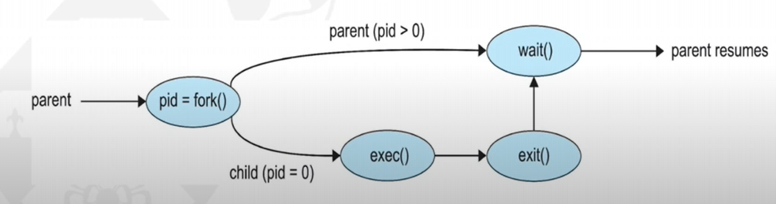
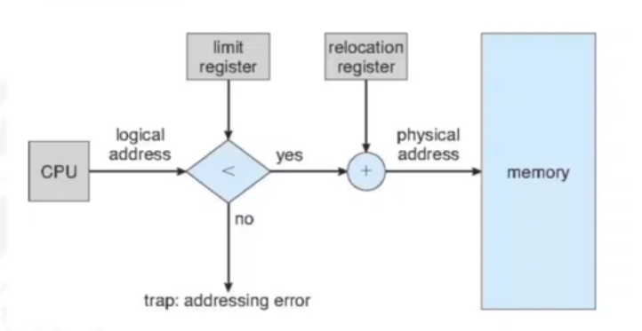
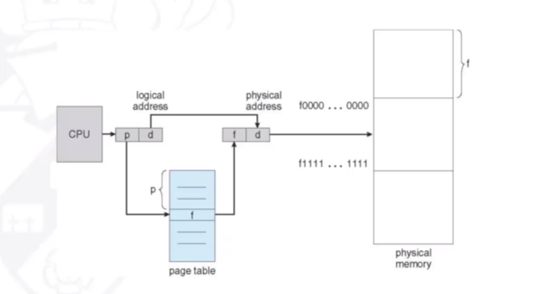
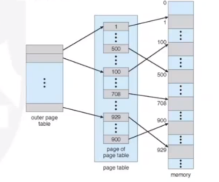
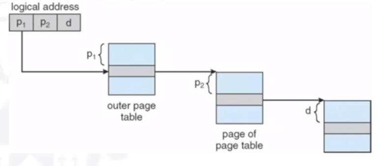
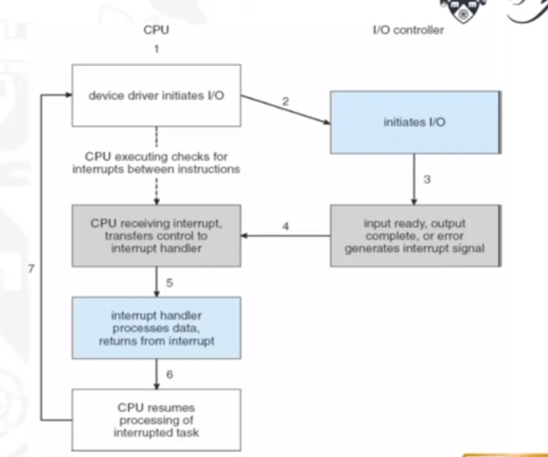
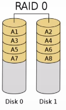
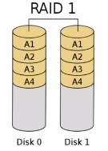
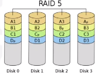
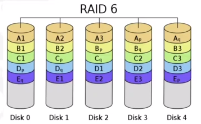

Topics:
- Operating Systems
- Processes
- Interprocess Communication
- Threads
- Process Scheduling
- Synchronisation
- Deadlock
- Memory Management
- IO Storage Management
- File Management
Operating Systems
What is an operating system?
Operating systems are software that manage computer's hardware. They act as an intermediary between the computer user and the computer hardware. They also provide the basis for application programs. They provide:
- Memory Management
- I/O Management
- Storage Management
Why do we need operating systems?
3 Reasons:
- Convenience: computer will be easier to use
- Efficiency: allows the computer system resources to be used efficiently
- Abstraction and interoperability: allows programmers/users flexibility to use different programming languages to application development, without having to worry about hardware architecture.
Types of OS
There are many different operating systems to support different computing paradigms. For example:
- Free and open-source OS (e.g. UNIX)
- Closed source or proprietry OS (e.g. Windows)
- Hybrid approach (e.g. MacOS that has an open-source kernel but closed-source components too)
Operating System Services

There are a number of different operating system services as shown above:
- User interface: user interfaces allow the user to interact with the operating system through mouse/keyboard
- Program execution: the system must be able to load a program into memory and run it. The programm must be able to end its execution
- I/O operations: a running program may require I/O, that the operating system must allow the user to give.
- File-system manipulation: programs will need to read and write files and directories, and be able to delete them, search for them and list information.
- Communications: processes will often need to exchange information with other processes. This is done through shared memory or message passing
- Error detection: the OS needs to be detecting and correcting errors all the time.
- Resource allocation: when multiple processes run at the same time, resources must be allocated to each of them. The OS must manage this.
- Accounting: we want to keep track of which programs use how and what kinds of computer resources. These statistics can be useful for administrators wishing to optimise comptuing services.
- Protection and security: information owners in a shared system may want to control use of the information. The OS must therefore make sure all access to system resources is controlled.
System Calls
System calls provide an interface to the services made available by an operating system, for a program, usually as functions written in C and C++. For example, cp in.txt out.txt copies the input file to the output file. Application programmers will make use of Application Programming Interfaces (APIs). These specify a set of functions that are available to the programmer, including expected parameters and return values. A programmer accesses the API (e.g. POSIX API) through a library of code provided by the OS. For UNIX systems with programs written in C, the library is called libc. So, APIs are sets of functions a programmer can access, to make use of system calls. APIs are accessed by a programmer using a library that the OS provides for that language.

A system call interface is provided by the run-time nevironment (i.e. the softare needed for a program in a programming language to be executed). This serves as the link to system calls mmade available by the operating system. Often, we need more information than just the identity of the system call. For example, to get an input file we need the name of the file. To pass parameters to the OS, usually registers are used. However, if there are more parameters than registers, a block that stores the parameters will be passed as a parameter to a register.
Types of system calls
- Process control: These system calls include methods to create and terminate processes, load and execute them, get process attributes, wait for an event and signal for one, and allocate and free up memory.
- File management:These include methods to create and delete files, open and close files, read, write and reposition files, and get file attributes.
- Device management: These include methods to request and release devices, read and write to them, get device attributes, and logically attach, or detach, devices.
- Information maintenance: These include methods to get and set time/date, get and set system data, get processes, files or device attributes, and set them.
- Communications: These include methods to send and recieve messages, create and delete connections, transfer status information and attach or detach remote devices.
- Protection:These include methods such as getting and setting file permissions.
System utilities
System utilities provide a convenient environment for program development and execution. Some are just interface to system calls (i.e. call a service), whereas as others are more complex. They can be divided into these categories:
- File management: allow the user to create, delete, copy, rename, print, dump, list, and generally manipulate files and directories.
- Status information: utilities that allow the user to see system info such as date, time, available memory etc. Also for showing performance, logging and debugging information.
- File modification: text editors allow creation and mofification of files.
- Programming language support (i.e. compilers, assemblers and debuggers)
- Program loading and execution: many different loaders are used, and debugging systems for higher-level and machine language
- Communications: allow the mechanism for creating virtual connections among processes, users, and computer systems
- Background services: these launch at boot time and provide facilities sucha s disk checking, process scheduling, and error logging
Application Programs
Operating systems also come with application programs a lot of the time that are useful for solving common problems, but don't pertain to the system. For example, web browsers or games. These aren't considered part of the OS generally.
Application prtograms compiled on one OS are not executable on other operating systems. This is because each operating system provides its own set of system calls. Sometimes, however, certain applications are available on multiple operating systems. This is for a few reasons:
- The application can be written in an interpreted language (e.g. Python or Ruby) that has an interpreter available for multiple OSs.
- The application can be written in a language that includes a virtual machine containing the running application e.g. Java. Java has an RTE that has been developed for many operating systems, that can run the language on it.
- The application gets portred to each OS it will run on. This can be very time consuming and must be done for each new version.
ABIs (Application Binary Interfaces) can be used to define how different components of binary code can interface for a given OS on a given archtecture. It sepcifices low level details such as address width, and methods of passing parameters to system calls. They are specified for a given architecture and are therefore the architecture-level equivalent of an API.
OS Design and Implementation
Design and implementation of OS is not 'solvable' but some approaches are more successful. There are certain user goals and system goals that need to be defined beforehand. User goals include OS convenience, how easy it is to learn, its reliableness, safety and speed. System goals include how easy the OS is to design for, how easy it is to implement and maintain, and how flexible, reliable and error-free it is to do this.
We can use a policy and mechanism method of designign OSs. A policy is what needs to be done, and the mechanism is how to do it. The seperation of policy from mechanism is important as it allows flexibility if policy decisions are to be changed later.
In terms of implementation, there is lots of variation. Early OS's were implemented in assembly language, then system languages like Algol, and now C/C++. Usually, they are made of a mix of languages with the lowest in assembly, the main body in C and systems programs in C, C++ and scripting languages such as Python. More high-level languages are easier to port to other hardware, but they are slower. Emulation allows for OSs to run on non-native hardware.
Operating System Structure
Monolithic Structure
Original UNIX had a monolithic structure. The OS consists of two seperablwe parts: systems programs and the kernel that consists of everything below the system-call interface and above the physical hardware. It provides the file system, CPU scheduling etc
Monolithic + Modular Structure
Linux has this structure, where parts of the OS are sepeated out into modules: applications, system-call interface, device drivers, and hardware
Layered Apporach
The OS is divided into a number of layers, that are built on top of lower layers. The bottom layer (layer 0) is the hardware, the highest (N) is the user interface. With modularity, layers are selected such that each uses functions and services of only lower-level layers.
Microkernels
This approach moves as much from the kernel into user space as possible. Mach (that Mac OS kernel, Darwin, is partly based on) is an example of a microkernel OS. Communication takes place between user modules using message passing. Has a number of benefits such as being easier to extend and port, and more reliable. However, there is a performance overhead of user space to kernel space communication.
Modules
Many modern OSs implement loadable kernel modules (LKMs). These use an object-oriented approach where each core component is seperate from each other. They talk to each other over known interfaces and each is loadable as needed within the kernel. Similar to layers but more flexible (Linux uses this, as mentioned earlier)
Hybrid Systems
The majority of modern OSs are not one pure model. Hybrid systems combine multiple approaches to address different needs. Windows is mostly monolithic, but also uses a microkernel apporach for different subsystem personalities. Apple Mac OS X is a hybrid. It is layered with an Aqua UI, with a kernel below it consisting of Mach microkernel and BSD Unix parts as well as dynamically loadable modules.
System Boot
When the power is initalised on a system, execution starts at a fixed memory location. The OS must be made available to the hardware so the hardware can start it. A small piece of code called the bootstrap loader (BIOS) is stored in the ROM. This locates the kernel and loads it into memory, then starts it. The root file system is then mounted.
OS Debugging
Debugging is finding and fixing errors (bugs). It is also called performance tuning. The OS generates log files that contain error information. The failure of an application can generate a core dump file, that captures the memory of the process. Failure of the OS itself can generate a crash dump file, containing kernel memory. Performance tuning can also optimize system performance. This is done through trace listings of activities that are recorded for analysis, and profiling that periodically samples the instruction pointer to look for trends.
Performance Tuning
In performance tuning, we can improve performance by removinng bottlenecks in the system. This means the OS must provide a means of computing and displaying measures of system behaviour. For example, Windows Task Manager.
Tracing
Tracing is where we collect data for a specific event, such as steps involved in a system call invocation. The tools include 'strace' - to trace system calls, 'gdb' - a source level debugger, and 'perf' - a collection of Linux performance tools, to name a few.
Processes
What is a Process?
Processes are programs in exeuction. The execution of a process must progress in sequential fashion. There can therefore be no parallel execution of instructions of a single process. An operating system executes a variety of programs that run as processes. Programs are static, whereas a process is dynamic (a program in execution).
Processes have multiple parts:
- The program code, also called the text section.
- Current activity including program counter and processor registers.
- A stack containing temporary data such as function parameters, return addresses and local variables.
- The data section containing global variables.
- The heap containing memory dynamically allocated during run time.
As a process executes, it changes state:
- New: the process is being created
- Running: instructions are being executed
- Waiting: the process is waiting for some event to occur
- Ready: the process is waiting to be assigned to a processor
- Terminated: the process has finished exeuction
Process Control Block
When a process is created, a process control block is created for that process that contains the information associated with it. For example:
- Process state: running/waiting etc
- Program counter: the location of instructions to next execute
- CPU registers: contents of all process-centric registers
- CPU scheduling information: priorities, scheduling queue pointers
- Memory-management information: the memory allocated to the process
- Accounting information: e.g. CPU used, clock time elapsed etc
- I/O status information: I/O devices allocated to process etc
Threads
Multiple program counters per process would mean that multiple locations can execute at once. Essentially it means multiple threads of control. It would also mean that the PCB would need to store these multiple program counters.
Process Scheduling
The process scheduler selects between multiple processes for the next exeuction on a CPU core. The goal is to maximize CPU usage. It maintains scheduling queues of processes. There is a ready queue with processes in main memory, waiting to execute, and a wait queue where processes are waiting for some event. Processes will migrate across the various queues.
Context Switching
When the CPU switches to another process, the system must save the state of the old process and load the saved state for the new one via a context switch. The context of a process is represented in the PCB.
The OS must provide the mechanisms for process creation and termination.
Process Creation
To create a process, a parent process must create a child process, which then create their own processes. This creates a process tree. Processes are generally identified and managed via a pid (process identifier)
There are multiple options for processes sharing resources. They can either share all, some or none. There are also mutliple process execution options. Parents and children can execute concurrently, or the parent can wait for the child process to terminate.
For example, the C functions fork() and exec() allow process creation. A parent process could call 'fork()', creating a new duplicate process (the child) that could run 'exec()' to replace the process' memory space with a new program. Meanwhile the parent process waits for the child to terminate. It can do this by checking the pid.
Process Termination
Processes exeucte their last statement and then ask the OS to delete them with the 'exit()' system call. The status is returned from child to parent with 'wait()' and the resources are automatically deallocated.
Parent processes can call 'abort()' to terminate child processes, in case the child has exceeded allocated resources, or the task is no longer required. Also, an OS may not allow child processes to continue if the parent ones stop. Therefore, if a parent process terminates, all of its children must do so as well. This is called cascading termination, initiated by the OS.
The wait() call returns the status information and pid of the terminated process. If no parent process invokes 'wait()' then the child process is a zombie. If a parent process terminates without invoking 'wait()', the child is an orphan.
Interprocess Communication
Processes in a system can be independent or cooperating. Processes may need to cooperate to share information, speedup computations, for modularity, or for convenience. Cooperating processes need interprocess communication. There are two models of IPC:
- Shared memory
- Message passing
Producer-consumer problem
The paradigm for coopearting processes is in terms of a producer and a consumer. The producer process produces data that is consumed by the consumer process. There are two variations:
- unbounded buffer: no practical limit on size of buffer. This means that the producer never waits, and the consumer waits when there is no buffer to consume.
- bounded buffer: assumes there is a fixed buffer size. The producer must wait if all buffers are full, and the consumer still waits if there is no buffer to consume.
Shared memory
Shared memory is where there is an area of memory among proccess that wish to communicate. The communication is under control of the user processes, and not the OS. The issues are that actions from user processes will need to be synchronized when accessing shared memory.
Message passing
Here, processes communicate with each other without resorting to shared variables. The IPC facility provides two operations:
- send(message)
- recieve(message)
For two processes wishing to communicate, a communication link must be established between them. Messages are then exchanged through send/recieve. There are implemenetation issues in things like how links are established, how many processes can link, how many links can there be between processes, and capacity of links.
Logically, communication links can be implemented through direct or indirect communication:
- Direct communication: this is where processes must name each other explicitly, in the send and recieve commands. Links are established automatically,, and a link is assoicated with exactly one pair of processes. There is exactly one link, and it may be unidirectional, but usually bi-directional.
-
Indirect communication: this is where messages are directed and recieved from mailboxes, or ports. Each one has a unique id, and processes can communicate
only if they share a mailbox. Here, a link is established only if processes share a common mailbox. A link may be associated with many processes, and each pair of processes
can have multiple communication links. Links may be unidirectional or bi-directional.
The operations that can happen in indirect communication include the creation of new mailboxes, sending and recieving message through the mailbox, and the deletion of a mailbox. The send and recieve operations will name the mailbox, instead of a process.
Problems could arise when there are multiple recievers of a mailbox. Who will get the message when two processes issue a recieve command at the same time? Solutions could include allowing a link to be associated with at most two processes, or to allow only one process at a time to execute a reccieve operation.
Synchronization
Message passing may be either blocking or non-blocking:
- Blocking is considered synchronous. A blocking send will block the sender from sending more messages until the message is recieved. A blocking recieve will block the reciever from recieving more messages until one is available.
- None-blocing is considered asynchronous. A non-blocking send allows the sender to send a message and continue sending more. A non-blocking recieve will mean the reciever can recieve messages whenever it wants, and may recieve a null message if none are available.
Pipes
Pipes act as a conduit, allowing two processes to communicate. There are two types:
- Ordinary pipes. These cannot be accessed fromm outside the process that created it. Typically, a parent process creates a pipe and uses it to communicate with a child process that it created. These allow communication in a standard produer-consumer style. The producer writes to one end of the pipe, the write-end and the consumer reads from the other end (the read-end). They are called anonymous pipes in Windows.
- Named pipes. These can be accessed without a parent-child relationship. These are therefore mmore powerful, as communication is bi-directional.
Threads
Threads are...Process Scheduling
Process Scheduling is...Synchronisation
Synchronisation is...Deadlock
Deadlock is what happens when threads both use and request
There are four conditions that must simultaneously hold for deadlock to occur:
- Mutual Exclusion At least one resource must be held in a nonsharable mode i.e. one thread at a time can use the resource. If another thread requests it then it (the requesting thread) must be delayed until the resource has been released.
- Hold and wait A thread must be holding at least one resource and waiting to acquire additional resources that are currently being held by other threads.
- No preemption Resources cannot be preempted (they can only be released voluntarily by the thread holding it when its completed its task)
- Circular wait A set {T0, T1, ..., Tn} of waiting threads must exist such that T0 is waiting for a resource held by T1, T1 is waiting for a resource held by T2, Tn-1 is waiting for Tn, and Tn is waiting for T0.
Resource-Allocation Graph
We can describe deadlocks more precisely using a directed graph called a system resource-allocation graph consisting of vertices V and edges E. V is split into T = {T1, T2, ..., Tn} and R = {R1, R2, ..., Rn}, the sets of threads and resource types respectively. We represent a resource request as a directed edge from thread Ti, to resource type Rj (Ti -> Rj). A directed edge from resource type Rj to thread Ti, represents that a resource has been allocated to the thread (Rj -> Ti). These edges are called request edges and assignment edges respectively.The number of resources in a resource type Rj are represented graphically as a small dot '.', as resource types can have multiple resources available. Therefore an assigment edge must designate one of the dots.
A cycle must have a cycle to be in a deadlocked state. If there is a cycle, then the system may or may not be in a deadlocked state.
Handling Deadlocks
The deadlock problem can be handled by an operating system in one of three ways:- We can ignore the problem and pretend deadlocks never occur! Linux and Windows use this method and therefore leave it up to kernel and application developers to handle them.
- We can use a protocol to prevent or avoid deadlocks Prevention -> ensure one of the necessary conditions do not hold
- We can allows the system to enter a deadlocked state, detect it, and then recover Databases use this.
Avoidance -> the system is given additional information in advance concerning resources allocation so it can be decided whether or not threads should wait when requesting a resource.
Deadlock Prevention
We ensure one of the necessary conditions do not hold.- Mutual Exclusion: we can use sharable resources, that do not require mutually exclusive access. For example, read only files. However, this does not work as some resources are intrinisically nonsharable.
- Hold and Wait: ensuring hold-and-wait does not occur, we must guarantee that when a thread requests a resource, it does not hold any other resources. We could use a protocol where threads must be allocated all its resources before it begins execution. However this is impractical due to the dynamic nature of requesting resources. This leads to low resource utilization (since resources may be allocated but unused for a while). Also, starvation is possible as a thread may never be allocated its resources if they are popular and always allocated to other threads.
-
No Preemption: ensuring this does not hold means adopting a protocol like the following. If a thread is holding
resources and requests another that cannot be immediately allocated, then all resources the thread is currently holding
are preempted. This means they are released, and added to the list of resources the thread is waiting for. Only when the
resources it had before, and the ones it now requires, are available can the thread be restarted.
This protocol is well suited to resources whose state can be easily saved and restored later, like CPU registers and database transactions. It is not well-suited for resources like mutex locks and semaphores, where deadlocks occcur most frequently. -
Circular Wait: this conditions presents the best opportunity for preventing deadlocks. To do this, we must impose
a total ordering of all resource types, and to require that each thread requests resources in an increasing order of
enumeration.
A function will give each resource type a unique natural number (F: R -> N). Resources will be requested in an increasing order of enumeration. So if Ri is requested, the thread can request Rj only if F(Rj) > F(Ri). If several instances of the same resources are needed, a single request for all of them must be issued.
Deadlock Avoidance
If we can gather information about what resources that threads will use ahead of time then we can avoid a situation in which deadlock is possible. For example, one model requires that each thread declare the max number of resources of each type that it may need.Safe state
A state is safe if the system can allocate resources to each thread (up to its maximum) in some order and still avoid a deadlock. That is, there must exist a safe sequence of threads, where each threads request can be satsified by the currently available resources plus the resources held by the ones before it.Example:
Consider the following system, with twelve resources and three threads.
| Thread | Maximum needs | Current needs |
|---|---|---|
| T0 | 10 | 5 |
| T1 | 4 | 2 |
| T2 | 9 | 2 |
Since 9 resources are currently being used (5+2+2), we have 3 (12-9) free resources.
A t0, the system is in a safe state as there exists a sequence <T1, T0, T2>. We immediately can allocate T1 with the 2 exta resources it needs (giving 3-2=1 free resource), until it releases all its resources after finishing (1+4) freeing up 5 resources. These 5 resources can then be given to T0, which then frees up 10 in total. Then 7 resources can be given to T2 which then finishes.
Now we have defined a state where deadlock cannot exist, we can create avoidance algorithms that ensure the system cannot reach these states.
Banker's Algorithm
This algorithm is useful for when we have multiple instances of each resource type. A new type of edge is used, the claim edge. This edge is made before threads request resources, to indicate that the thread may request a certain resource in the future. It is represented by a dashed line. It gets converted into a request edge when the resource is requested, and back into a claim edge after the resource is released.The banker's algorithm ensures that that when a new thread enters the system, it must declare the maximum number of instances of each resource type that it may need, and cannot exceed the total number of resources in the system. When resources are requested, the system must determine whether the allocation of these resource will leave the system in a safe state.
Several data structures must be maintained for implemenetation of the algorithm:
- Available. A vector of length m that indicates the number of available resources of each type.
- Max. An n x m matrix that defines the maximum demand of each thread. Max[i][j] = k means thread Ti may request at most k instances of resource type Rj
- Allocation. An n x m matrix that defines the number of resource of each type currently allocated to each thread.
- Need. An n x m matrix that indicates the remaining resource need of each thread. Need[i][j] = Max[i][j] - Allocation[i][j]

Essentially, it allocates all threads as 'unfinished'. When it finds a thread that has needs that can be met (i.e. its resource needs are available) then it gets allocated the resources, and these resources then get added to 'work'. If no thread can have its need met by the available resources, the algorithm will decide the state is unsafe.
We now need to use a resource-request algorithm, to determine whether requests can be safely granted:

Deadlock Detection
We can use algorithms to detect deadlocks, too. However, we must decide when we should invoke the detection algorith. This depends on two factors:- How often is a deadlock likely to occur?
- How many threads will be affected by deadlock when it happens?
Recovery from Deadlock
There are two options for breaking a deadlock. One is simply to abort one or more threads to break the circular wait. The other is to preempt some resources fromm one or more of the deadlocked threads.Process and thread termination
We can either abort all deadlocked processes (will definitely break the cycle, but at great expense), or abort one process at a time until the deadlock cycle is eliminated. The second method incurs a lot of overhead, as we need to run the deadlock-detection algorithm every time we abort a process.In choosing which processes should be aborted, we want the ones that will incur the minimum cost. However minimum cost is subjective. There are number of factors that may affect the choice of process such as:
- Process priority
- Length of time process has been computing, and how much longer is left
- How many, and types, of resources the process has used (are they simple to preempt?)
- How many mmore resources the process needs
- How many processes will need to be terminated
Resource Preemption
To eliminate deadlocks using resource preemption, we succcessively preempt (remove and give to other) resources from processes and give these resources to other processes, until the deadlock cycle is broken.Three issues will need to be addressed:
- Selecting a victim Which resources and which processes are to be pre-empted? Want to minimize cost (e.g. amount of time process has thus far consumed).
- Rollback What happens to the process? It cannot continue, so we must roll it back to some safe state and restart it from that state. Usually it is easier to completely restart it, as determining the safe state is difficult.
- Starvation How do we ensure starvation will not occur (resources not preempted from the same process every time)? The same victim may always be picked if using minimum cost. We must therefore ensure a victim can only be picked a small, finite number of times. We can therefore include the number of rollbacks in the cost factor.
Memory Management
Basics:
The only way the CPU can retrieve memory is through main memory and the registers. The CPU fetches instructions from main memory according to the value of the program counter.

The memory in the processing cores, also called cache memory, is more difficult for the operating system to control. The memory unit sees a stream of one of the following:
- A read request + an address (e.g. LOAD memory location '20010' into register number '8'.
- A write request + some data + an address (e.g. STORE contents of register '6' into memory location '1090'
Therefore, we use cache memory to sit between main memory and the CPU registers to mitigate stalling.
Address Space
A (logical) address space is a range of addresses that an OS makes available to a process. The OS enforces memory protection. That is, a process can only read and write within its address space. We must therefore seperate memory spaces which we do by providing a range of legal addresses that the process may access. This is done through two registers, a base and a limit. The base register holds the smallest legal physical memory address, and the limit register sepcifices the size of the range. For example, if the base registers holds 300040 and the limit register is 120900, then the program ccan legally access all addresses from 300040 through 420939 (base + limit) inclusive.

It is the CPUs job to check that every memory access generated in user mode is between the base and the base+limit for that process.
There is also the issue of deciding where the program gets stored in main memory (after ist is loaded from secondary storage). Could use address 0000 for the first physical address of a program and use that as reference, but this is impractical. Therefore we need hardware and/or software support for memory management.
Addresses are represented in different ways at different stages of a program's life e.g. as a programmer you may use a variable name, but the compiler will bind these symbolic addresses to relocatable addresses. The linker/loader will bind relocatable addresses to absolute addresses. The binding of instructions and data to memory addresses can be done at any step along the way:
- Compile time: if you know at compile time where the process will reside in memory, then absolute code can be generated. The code will need to be recompiled if the starting location changes at some later time.
- Load time: if it is not known at compile time where the process will reside in memory, then the compiler must generated relocatable code. Here, the final binding is delayed until load time. If the starting address changes, we need only to reload the user code to incorporate this changed value.
- Execution time: if the process can be moved during its execution from one memory segment to another, then binding must be delayed until run time. Special hardware is needed for this scheme to work. Most OSs use this method.

Memory Management Unit
The Memory Management Unit (MMU) is a hardware device that, at runtime, maps logical addresses to physical addresses. The CPU will spit out a logical address, and the MMU will take that and give a physical address that can be used in physical memory by the OS. The user program deals with logical addresses and will never see the real physical address. There are many ways to do these bindings, and have been worked on over time and became more and more complex.
Memory Management Methods
Contiguous Memory
A basic way of doing memory management is throughFixed Contiguous Partitions
This is where The OS assigns one partition per process, where the size of the partitions are defined at boot-up time and never change. This way, there is protection against memory intrusion. The OS must be allocated its own partition. When a new process is started, the OS has to:
- Determine the relevant partition
- Determine the start address within the active partition
- Resolve address: physical address = issued address + fixed base register
Dynamic Contiguous Partitions
To solve the problems of fragmentation, dynamic contiguous partitions were introduced. This is where partition size is dynamically selected when a job is loaded.
Addresses get resolved through a variable base register, instead of a fixed one (physical address = issued address + variable base register).
This alleviates the previous problems, however does not solve them completely.
It introduces external fragmentation (as opposed to internal previously encountered). The OS must keep track of free partitions.
Here you can see that there are two free partitions in the memory, however a process that requests memory that is bigger than both partitions (but not bigger than them combined) will not be allowed to run. This is because whilst there is available memory, it is in different partitions.
Partition allocation problem
If we want to satisfy a request of size n from a list of free partitions, there are a number of ways we can go about it:
- First-fit: allocate the first partition that is big enough
- Best-fit: allocate the smallest partition that is big enough. This means the entire list of partitions must be searched, unless we maintain an ordered list.
- Worst-fit: allocate the largest partition. The list must also be searched here.
External fragmentation can be mitigated by a compaction (or defragmentation) procedure. This requiores relocatable partitions, where the base register needs to be changed. The compaction alogirhm needs spare memory space to operate efficiently, as it moves small partitions out of the way before relocating large partitions. Compaction can not be performed whilst I/O is in progress involving memory that is being compacted.
As shown here, in the CPU there will be a relocation register, so logical addresses will be unchanged. The OS will apply the relocation though, and change the relocation register if the partition is moved elsewhere.
DCP - Swapping
A process can be swapped temmporarily out of memory to a backing store, and then brough back into memory for continued execution. This is done because the total physical memory space of processes may actually exceed physical memory.
A backing store is a fast disk, large nough to accommodate binaries of all processes. A major part of swap time is transfer time, which is directly proportional to the amount of memory swapped.
Context switching time will include swapping if the next processes to be put on the CPU are not in memory. Therefore the context switch time will be very large. If we are swapping out a 100MB process and our hard disk has a transfer rate of 50MB/sec then there will be a swap out time of 2 seconds. This will be 4 seconds as we need to swap in a process of the same size.
Paging
The physical address space of a process can be noncontiguous: the process is allocated physical memory whenever it is available. This avoids external fragmentation and the problem of having varying sized memory chunks.
Essentially, the physical memory is divided into fixed-size blocks called frames, and the logical memory is divided into blocks of of the same size called pages. Interal fragmentation is still a minor issue here.
The OS must do a few things to manage paging. It must:
- keep track of all free frames in memory
- ensure that to run a program of size N pages it needs to find N free frames to load the program
-
set up a page table to translate logical to physical addresses, which is kept in memory:
- Page-table base register (PTBR) points to the page table
- Page-table length register (PTLR) indicates the size of the page table
Address Resolution in Paging
If the logical address space is 2m and the page size is 2n then the address generated by the CPU is divided into:
- Page number (p) which is used as an index into a page table which contains the base address of each page in physical memory. The size of p is "m-n" bits
- Page offset (d) which is combined with the base address to define the physical memory address that is sent to the memory unit. The size of d is "n" bits.
The diagram below shows how given p and d, a physical memory address can be resolved:
Below is a badly drawn example of resolving an address when p=2 and d=2

Another example below shows paging resolution when there are 4 bytes per page. In our logical memory '0' refers to the bytes abcd, in our page table, it refers to '5' (the fifth page in our physical memory).
Internal fragmentation in paging
There will be minor interal fragmentation in paging. This is because if a process requires an amount of memory that x pages can be used for, but the last page still has some free leftover memory then there is memory not being used. For example, a process requires 72,766 bytes. The page size is 2048. Therefore there can be 35 pages of 2048 bytes plus 1 page of 1086. This leaves 962 (2048 - 1086) free bytes on the 36th page - internal fragmentation.
The worst case fragmentation will be 1 frame - 1 byte. On average it is 0.5 * frame size, however. There is a performance trade-off with changing the page size. Reducing the page size minimizes internal fragmentation, but increasing it means there will be less pages needed, reducing the page table size and allowing a faster and simpler implementation of memory management.
Performance issues in paging
If the page table is kept in main memory then ever data/instruction access requires two memory accesses (one for the page table and one for the data/instruction). This problem can be solved by the use of a special fast-lookup hardware cache called associative memory, or a translation look-aside buffers (TLBs). The most common page/frames willl be stored here for quick access.
The TLB is typically small (64 to 1024 entries). On a TLB miss (i.e. value not in the table), the value of the missed page-table and frame-number is loaded into the TLB for faster access next time that address is used. If there is no free TLB entry, replacement policies must be considered. Some entries can also be 'wired down' for permanent fast access.
Shared Pages
Shared pages are essentially shared code. One copy of read-only (reentrant) code is shared among processes (e.g. text editors, compilers, or window systems). This is similar to multiple threads sharing the same process space. It is also useful for IPC if sharing of read-write pages is allowed. It eliminates the need of replicating code in memory, as nothing is being written.
Code and data is kept private though, as each process keeps a seprate copy of the code and data.
Memory strucures for paging can get huge using straight-forward methods. For example, a 32-bit logical address space and a page size of 1KB (210) would give a page table of 4 million entries (232 / 210). If each entry is 4 bytes, the page table is of size 16MB. This can be costly, and we may not be able to allocate this contiguously in main memory There are some solutions to this, such as exploiting hierarchy.
Hierarchical Page Tables
Here, we break up the logical address space into multiple page tables, such as a two-level page table. We then page the page table. As always, there is a trade-off. More layers means more time going through memory.
The page number will be divided into two numbers, for two page tables.
The ARM architecture is an example of one that uses a hierarchical page table structure.
I/O Storage Management
I/O Management
The I/O subsystem is responsible for controlling all of the devices connected to a computer. It must:
- Provide processes with a sufficiently simple interface
- Take device characteristics into account to maximise performance and efficiency
Device Drivers
These are low level software that interacts directly with the device hardware. They hide the hardware details from the higher levels of the OS and user applications, and are often developed by the hardware vendor. They track the status of the device and enforce access/allocation policies. There are a number of types:
- Dedicated: each device is allocated to a single process
- Shared: each device is shared between multiple processes
- Virtual: hides sharing from processes
Devices
Devies usually have registers where the device driver places commands, addresses, and data to write. The devices read data from these registers after command execution. There are a number of registers (data-in, data-out, status, and control) which are usually 1-4 bytes of fixed size, or a FIFO buffer.
Devices have addresses that are used by:
- Direct I/O instructions
- Memory mapped I/O: the device data and command registers are mapped to the processor address space
The I/O subsystem provides interfaces to access devices via the drivers. There are a number of communication mechanisms:
- Polling and interrupts
- Direct memory access (DMA)
- Buffering
Polling
The CPU constantly 'polls' for the busy bit. For each byte of I/O:
- Read busy bit from status register until 0
- Host sets the read or write bit and if write copies data into data-out register
- Host sets command-ready bit
- Controller sets busy bit, executes transfer
- Controller clears busy bit, error bit, command-ready bit when trasnfer done
Interrupts
Polling can happen in 3 exeuction cycles: read status, extract status bit, and branch if not zero. This can be more efficient if the bit is infrequently non-zero.
The CPU interrupt-request line can be triggered by an I/O device. It is checked by the processor after each instruction. The interrupt handler recieves the interrupts, and is able to ignore or delay some interrupts. An interrupt vector disptaches an interrupt to the correct handler. A context switch is needed here at the start and the end. We also need to chain interrupts if there are more than one devices at the same interrupt number.
The following diagram shows how interrupts are essentially handled:
Interrupts make more sense when I/O takes longer, because the context switches are expensive.
DMA
DMA, or Direct Memory Access, avoids the inefficiency of interrupts. It is used to avoid programmed I/O for large data movement, but in turn requires a DMA controller. It bypasses the CPU to trasnfer data directly between the I/O device and memory.
The OS writes a DMA command block into memory, which contains:
- Source and destination addresses
- Read or write mode
- The count of bytes
- The location of the command block written to the DMA controller
The DMA controller is a master on the system bus, and will compete with the CPU for control of that bus.
Storage Devices
The hierarchy of storage devices is driven by the performance and volatility of data. Data acess time includes the ready time (time to prepare and set up stroragem edia to read/write data at the appropriate location, e.g. wind/rewind tape, rotate disk etc). It also includes transfer time: the time to read/write data from the media.
Difference devices can impose access latencies at different orders of magnitude. The OS should manag3e each of them appropriately and mediate transfers (e.g. buffering).
Teriary Storage
Tertiary storage is primarily used for backups and storage of infrequently-used data, and as a transfer medium between systems. A magnetic tape is an example, with a large capacity (GB to TB) but very slow access time, as tape must be wound and rewound to a position. However, once in place, it has reasonable transfer rates (>140MB/s)
Secondary Storage
This is non-volatile, high-capacity storage that supports swapping/paging. This includes magnetic disks (HDDs), SSDs, and Redundant Arrays of Independent Disks (RAIDs).
Magnetic disks are made of n disks (with 2n sides), where each side is divided into circular tracks, and each track into sectors. One cyclinder is a set of tracks at the same position on all sides. Access time is the seek time (disk head movement) + search time (rotational delay) + transfer time.
Other non-volatile memory, such as flash memory, have no mechanical components; only a cointroller and NAND-based flash memory integrated circuits. These are more reliable than HDs (no moving parts), can be faster (no seek time or latency) and consume less power. They are also therefore more expensive per MB, lower capacity (generally) and may have a shorter lifespan.
RAID
These are sets of physical disks viewed as a single logic unit by the OS. They allow simultaneous access to multiple drives, which gives increased I/O performance and improved data recovery in case of failure. Data is divided into segments called stripes, which are distributed across the disks in the array. RAIDs can be classified as level 0, 1, .., 6 which indicate different approaches to data redundancy and error correction methods.
RAID 0
In RAID 0, data is divided in segments that are stored across the disks in the array. There is a minimum of 2 disks. The read speed-up is proportional to the number of disks in the array, since distinct data can be read from different disks simultaneously. The write speed-up is also proportional as distinct data can be written to different disks simultaneously.
However, if one disk fails, there is no redundancy, and therefore no fault tolerance. Since reliability is inversely proportional to the number of disks, a RAID 0 will be more vulnerable to faults than a single hard disk. Also, the storage space added to the array by each disk is limited to the size of the smallest disk. e.g. if you striped a 120GB disk together with a 100GB disk, the capacity will only be 100 + 100 = 200GB.
RAID 1
RAID 1 has full redundancy (called mirroring) where data is copied in all disks of the array. Like RAID 0, there must be a minimumm of 2 disks. It tolerates faults on up to N-1 disks (i.e. would tolerate 4 faulty disks on a 5 disk set-up). The read speed-up is proportional to the number of disks in the array, for the same reasons as RAID 0, but there is no write speed-up since writes have to be done on all disks. It also has very low space efficiency (1/N).
RAID 2 (3,4)
In these levels, there is bit-level striping, dedicated Hamming (7,4) parity where there is four data bits plus three parity bits. There is a minimum of 3 disks, and tolerates fault in just one disk. These levels are now obsolete, however, as it is more complex than built-in error correction in modern hard disks.
RAID 5
RAID 5 distributes parity over multiple disks. There must be 3 disks minimum, and tolerates fault in one disk. Writes are costly operations, but it is still widely used.
RAID 6
RAID 6 doubly distributes parity, with a minimum of 4 disks and fault tolerance in two. Like RAID 5, it is also widely used (but costly writes still).
Storage Management
Multiple requests need to be handled concurrently, for example several programs may request storage operations at the samet time. We therefore need policies for servicing disk requests. An I/O scheduler handles this and decides which requests should be next executed, and allows for prioritised requests. Specific devices may require dedicated scheduling policies, for example to minimise seek time in magnetic disks, or avoid redundant writes in non-volatile memory.
Disk Management
The OS allows for disk formatting on the physical level (using disk sectors and checksums), and the logical level (using directory-trees and mapping free and allocated space). The OS also allows for partitions (logical disks on one physical one), a boot block (inital bootable code at a known sector), bad blocks (permanently corrupted blocks), and defragmentation (rearranging sectors used by files to be contiguous).